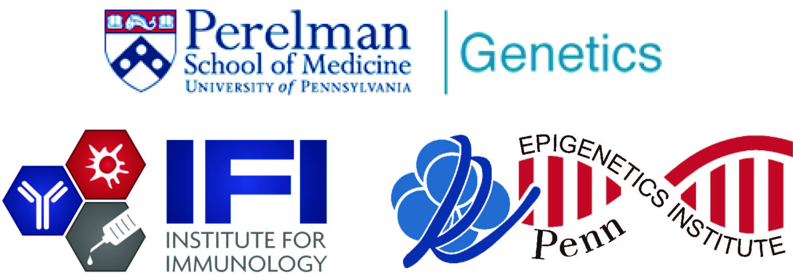

Golnaz Vahedi
Assistant Professor of Genetics |
The Vahedi Laboratory
Our laboratory is multidisciplinary, integrating computational and cutting-edge experimental approaches to develop a single to collective cell understanding of gene regulation in T cells.
What is the goal of our research?
Why is this an important goal?
How do we do research?
What is our training goal?
Biology in the 21st century is arguably the most data-rich science of the most intricately regulated dynamical systems that any discipline has to offer. We view quantitative and computational biology as intrinsic parts of the biological discipline. Our lab has an efficient and cohesive environment for trainees with molecular or cell biology backgrounds to get familiar with programming and standard genomics pipelines. Trainees with previous computational expertise will be immersed in biological problems with significant implications in human health and disease. They are able to devise novel methods generating new hypotheses which can be further tested in the wet lab using genetic approaches.
List of Projects 2018-2019 (Rotation, Thesis, Postdoc)
This article very nicely summarizes our lab's philosophy and the kind of projects available for trainees.
1) How is the 3D genome reorganized in T cells after activation?
2) Which transcription factors play key roles organizing the 3D chromatin architecture of T cells?
3) Exploiting natural genetic variations in multiple mouse strains to decipher transcription factor grammar in T cell development.
4) Novel tools to decipher transcription factor grammar from sequence and epigenomics data using machine learning.
5) What are the epigenetic mechanisms through which the transcription factor TCF-1 opens the chromatin in T cells? (PMID: 29466756)
6) Deciphering the contributions of genetics and epigenetics in type 1 diabetes development.
7) Can viruses change the 3D genome organization of infected host cells?
Trainees are welcome to join our weekly computational journal club on Fridays at 4pm (301 BRB).

We are Privileged to Collaborate With the Best
|  |